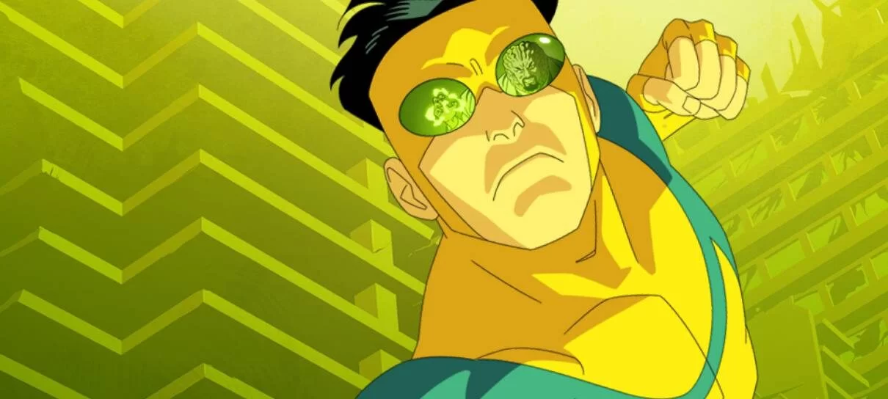

Animação do Prime Video retorna com episódios inéditos em março
Está quase na hora de retornarmos às aventuras da segunda temporada de Invencível. A animação do Prime Video ganhou um novo cartaz para a leva final de episódios, que chega a partir de março.
A arte mostra o herói titular partindo para a porrada contra os vilões apresentados nos novos episódios:
New Season 2 Part 2 art via our friends at @Collider. Nothing ominous about this at all!!! pic.twitter.com/HYooAA3YFQ
— INVINCIBLE (@InvincibleHQ) February 8, 2024
Baseada na HQ de mesmo nome, Invencível acompanha as aventuras do jovem super-herói Mark Grayson, que precisa conciliar a vida pessoal com as obrigações de salvar o mundo. A série retorna com a parte 2 da segunda temporada a partir de 14 de março. Os episódios anteriores estão em streaming no Prime Video. Siga de olho no NerdBunker para mais novidades invencíveis. Aproveite e conheça todas as redes sociais da gente, entre em nosso grupo do Telegram e mais – acesse e confira.
Fonte: Prime Video